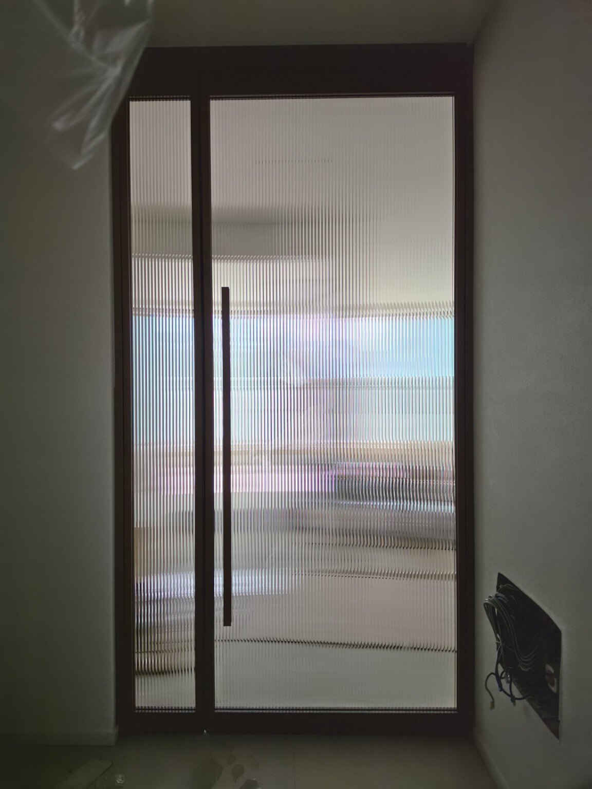
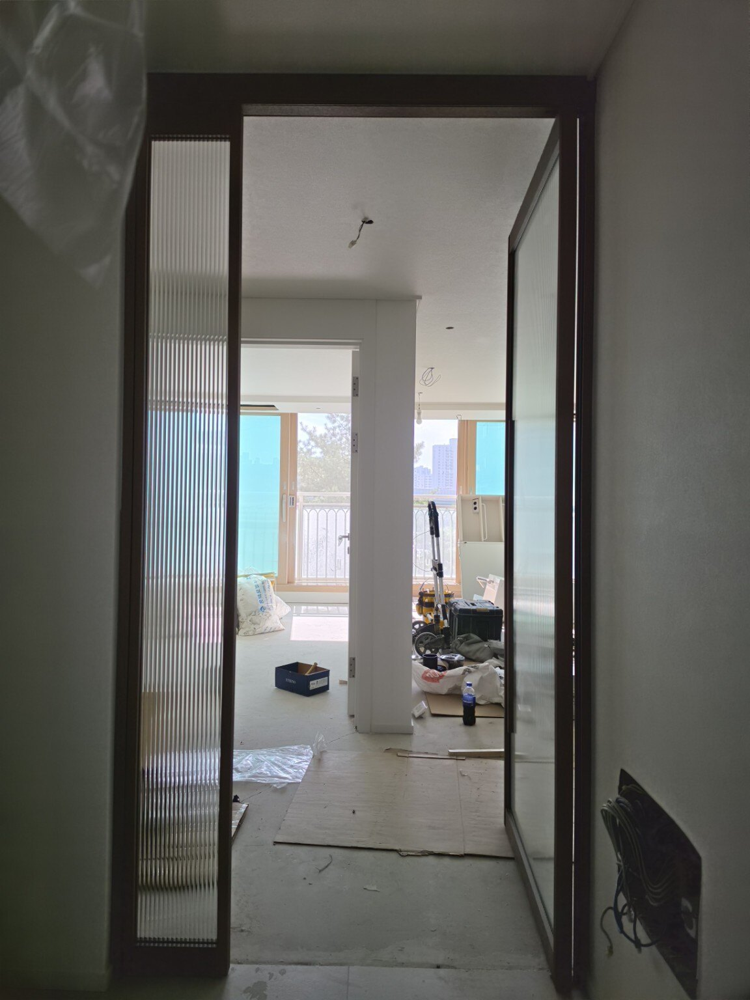
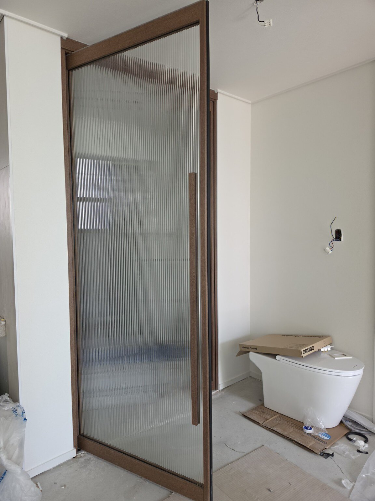
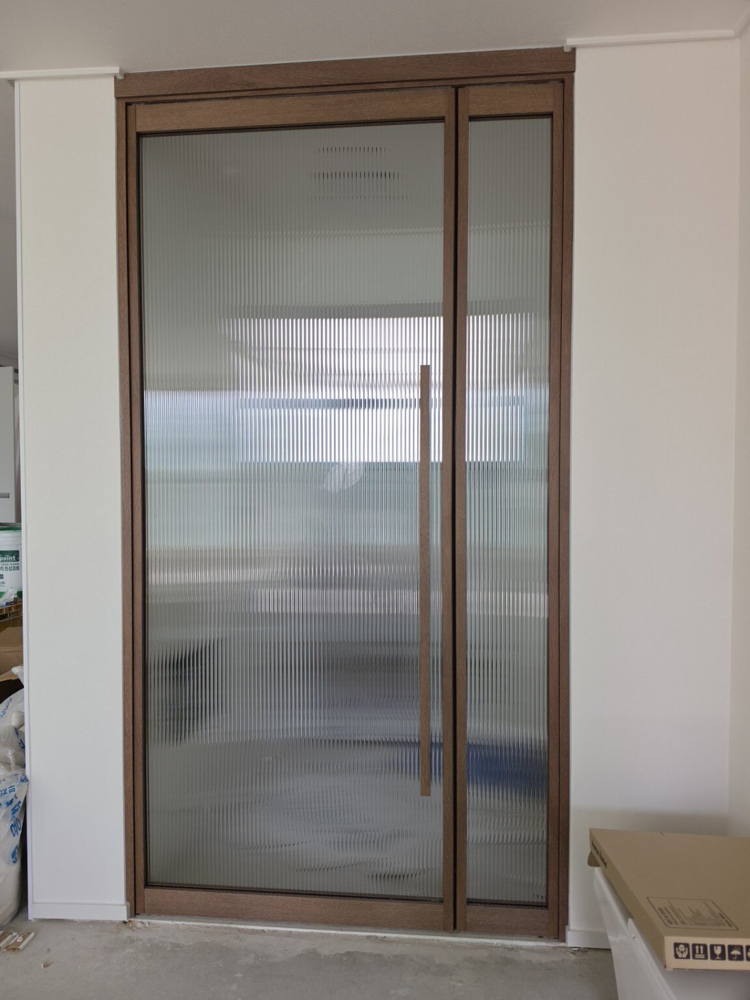
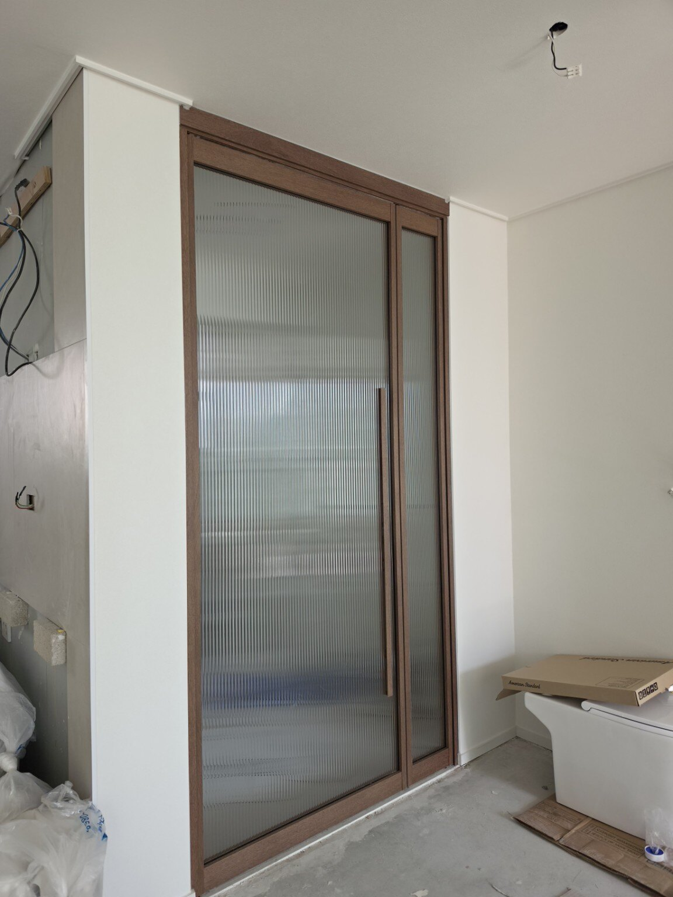

홈 › 현관중문 시공사례
인덕원센트럴자이 204동 34평
영림필름 184 우드 현관중문 시공
화이트톤 인테리어에 따뜻한 우드색을 포인트로 더하고, 모루 세로결 유리를 적용해 개방감과 프라이버시를 함께 고려한 현관중문입니다.
현장 : 인덕원센트럴자이 204동 34평
프레임 마감 : 영림필름 184번 우드색상
유리 : 모루 세로결 유리
구성 : 여닫이 현관중문 + 고정 유리
우드색상으로 완성한 고급스러운 현관
이번 현장은 밝은 화이트 계열의 벽과 가구가 많은 공간입니다. 여기에 영림필름 184번 우드색상을 적용해 중문이 너무 차갑게 보이지 않도록 하고, 현관 입구에 따뜻하고 차분한 포인트가 생기도록 구성했습니다.
문짝과 고정 부분에는 모루 세로결 유리를 적용했습니다. 세로 방향의 요철 패턴은 빛은 통과시키면서 반대편의 형상은 부드럽게 흐려 보여, 답답함을 줄이면서 현관과 실내를 시각적으로 구분하는 데 도움이 됩니다. 세로결이 프레임의 긴 비례와도 잘 어울려 문이 한층 높고 정돈돼 보이는 효과가 있습니다.
시공 사진









묻고 답하기
Q. 인덕원센트럴자이 34평에는 어떤 중문을 시공했나요?
A. 204동 34평 현관에 우드 프레임 여닫이 중문과 고정 유리를 구성하고 모루 세로결 유리를 적용했습니다.
Q. 영림필름 184번 우드색상은 어떤 분위기인가요?
A. 밝은 실내에 따뜻한 우드 포인트를 더해 차분하고 고급스러운 분위기를 만들기 좋습니다. 이번 현장처럼 화이트 계열 인테리어와도 자연스럽게 어울립니다.
Q. 모루 세로결 유리의 장점은 무엇인가요?
A. 빛은 통과시키면서 반대편 모습은 부드럽게 흐려 보여 개방감과 프라이버시를 함께 고려할 수 있습니다. 세로 패턴이 문을 길고 정돈돼 보이게 하는 시각적 효과도 있습니다.
Q. 우리 집 현관 구조에도 같은 방식으로 시공할 수 있나요?
A. 현관 폭, 벽체와 신발장 위치, 문이 열리는 동선에 따라 구성이 달라질 수 있습니다. 문다라는 현장 구조를 확인한 뒤 여닫이 방향과 고정 부분의 폭 등을 맞춰 제작·시공합니다.
현관중문 제작·시공 상담
문다라는 2003년부터 현관중문을 직접 제작·시공해 왔습니다. 현장 구조와 인테리어에 맞는 중문 상담이 가능합니다.
전화 상담 010-2432-1107